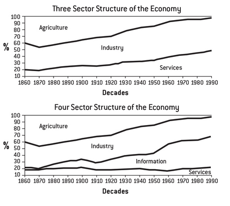

Chapter 5: Why Are Bullshit Jobs Proliferating?
Economies around the world have, increasingly, become vast engines for producing nonsense. One reason why this has been so little acknowledged is that under our current economic system, this is not supposed to happen. All of this was supposed to have ended with the collapse of the Soviet bloc and the market reforms in the 90s. People simply refused to believe capitalism could produce such results, even if that meant invalidating their own experiences.
Since 1980 we've seen a steady decline in farming and manufacturing, and a steady increase of the "service economy". The bulk of the service sector is FIRE (finance, insurance, real estate), which could be named as "information work".
The workforce of the service sector is quite small and it remained steady over time. What grew was the FIRE sector (information work), where most bullshit jobs proliferate. One could argue that the whole FIRE sector is a scam, since the bulk of its profits come from debt, speculation and the creation of complex financial instruments.
Levels of Analysis
- On the individual level, why do people agree to do and put up with their own bullshit jobs?
- On social and economic levels, what are the larger forces that have led to the proliferation of bullshit jobs?
- On the cultural and political levels, why is the bullshitization of the economy not seen as a social problem, and why has no one done anything about it?
Looking at the subjective motives of those who take such jobs is then treated as an alternative to asking why so many people find themselves in a position where the only way they can get money is by taking such jobs to begin with.
There has come to a tacit understanding that you can abscribe motives to people only when speaking about the individual level. Therefore, any suggestion that powerful people ever do anything they don't say they're doing is immediately denounced as a "paranoid conspiracy theory" and rejected instantly.
Social engineering does happen. The regime of make-work jobs that existed in the Soviet Union or Communist China was created from above by a self-conscious government policy of full employment.
But it's not like a higher up send a directive saying "I order all officials to invent unnecessary jobs until unemployment is eliminated". It was not necessary to do so, the ideal of full employment that all economic policies strive for since World War II make it clear. Calling for jobs never specifies that those jobs should serve some useful purpose.
One motive for maintaining the existent market-based system of health insurance, for example, is precisely its inefficiency. It's better to maintain those millions of basically useless office jobs than to find something else for the paper pushers to do.
There are 2 main objections to the proliferation of bullshit jobs:
- A group argues that bullshit jobs don't exist. Since competing firms would never pay workers to do nothing, their jobs must be useful in some way that they simply don't understand. Globalization has rendered the process of production so complicated that we need more and more office workers to administer it, so their jobs are not bullshit.
- Another group admits that useless paper-pushing jobs exist and have increased, but they state that the amount of bullshit jobs that exist in the private sector must necessarily be a product of government interference. This must be true because the market is freedom, and freedom is always good.
FIRE SECTOR
When a profit-seeking enterprise is in the business of distributing a very large sum of money, the most profitable thing for it to do is to be as inefficient as possible. This is basically what the FIRE sector does: it creates money (by making loans) and then moves it around in often extemely complicated ways, extracting a small cut with every transaction.
There's a very high level of stress, fear and paranoia in FIRE sector employees, especially banks. Employees are under enormous pressure not to ask too many questions and, in general, have little to no idea how their work contributes to the bank as a whole.
It's a system designed not to be understood, administrated by managers who have no idea what's going on below them, largely because it makes no sense. It's all just a meaningless ritual.
If one reduced life to pure physicality, the fact that some abstractions are more "real" than others, if some jobs have legal, moral or economic purpose and others don't, it's not really that important. It's as if they first forbid you to acknowledge your are engaging in empty ritual, then force you to attend seminars with hired gurus that tell you "In the end, isn't everything we do just empty ritual?"
Managerial feudalims
"When the top classes rob everybody else, they need a lot more guard labor to keep their stolen loot secure".
- Kevin Carson
In feudalism, it makes little sense to speak of separate spheres of "politics" and "the economy" because the goods are extracted through political means and distributed for political purposes. At the beginning of industrial capitalism the concept of "the economy" as an autonomous sphere of human activity started.
Under classic capitalist conditions it makes no sense to hire unnecessary workers. Maximizing profits means paying the least number of workers the least amount of money possible. In a very competitive market, those who hire unnecessary workers are not likely to survive. So our economy can't be riddled with bullshit jobs, it must be an illusion.
But by a feudal logic, where economic and political considerations overlap, the same behavior makes perfect sense.
The whole point is to grab a pot of loot (stealing it from enemies or extracting it from commoners by fees, rents and taxes), and the redistributing it. In the process, one creates an entourage of followers that is a visible measure of one's pomp and magnificence. And at the same time, it's a means of distributing political favor (buying off malcontent, rewarding faithful allies and creating a elaborate hierarchy of honors and titles for lower-rank nobles to fight over).
This is like a large corporation, whose purpose is less and less about making, building or fixing things and more and more about political processes of appropiating, distributing and allocating money and resources.
Medieval feudalism was based on a principle of self-governance in the domain of production. Anyone whose work was based on some kind of specialized knowledge was expected to collectively regulate their own affairs.
Industrial capitalism changed that, the rise of managerialism in the 20th century drove the process towards "efficiency". Which means giving more and more power to managers, supervisors and "efficiency experts" so that actual producers have almost zero autonomy. At the same time, the ranks of managers seem to reproduce themselves endlessly.
From 1945 to 1975 there was a "Keynesian bargain" between workers, employers and government, a tacit understanding that increases in worker productivity would be matched by increases in worker compensation. In the 70s, this stopped as compensation remained mostly flat and productivity took off like a rocket.
Where did the profit of this increased productivity go?
- To the pockets of the wealthiest 1% (investors, executives, upper management).
- Creating new and basically pointless managerial positions, accompanied by small armies of equally pointless administrative staff.
The feudal analogy is not even a real analogy. Managerialism has become the pretext for creating a new covert form of feudalism, where wealth and position are allocated not on economic but political grounds.
The longer the process takes, the greater the excuse for the endless multiplication of intermediary positions, and the more money is taken off before it has any change to get to those actually doing the work. Managerial feudalism ensures that thousands of hours of creative effort will literally come to nothing.
The reasons why individuals create or accept bullshit jobs are by no means the same as the reasons why such jobs will tend to proliferate in certain time and places. The deeper structural forces that drive such historical changes, in turn, are not the same as the cultural and political factors that determine how the public, and politicians, react to them. This proliferation appears to have everything to do with the growing importance of finance.
Executives in firms dedicated to producing breakfast cereals or agricultural machinery saw themselves as having more in common with production-line workers in their own firms than with speculators and investors. In the 1970s the financial sector and the executive classes effectively fused. This set off a vicious cycle where workers (who no longer felt any loyalty to corporations that felt none toward them) had to be increasingly monitored, managed and surveilled.
If the existence of bullshit jobs seems to defy the logic of capitalism, one possible reason might be that the existing system isn't capitalism.
It's a system of rent extraction where the internal logic is profoundly different from capitalism, since economic and political imperatives merge. It resembles classic medieval feudalims, displaying the same tendency to create endless hierarchies of lords, vassals and retainers.
And the whole apparatus, rather than replacing old-fashioned industrial capitalism, is superimposed on top of it, blending together in a thousand points in a thousand different ways.